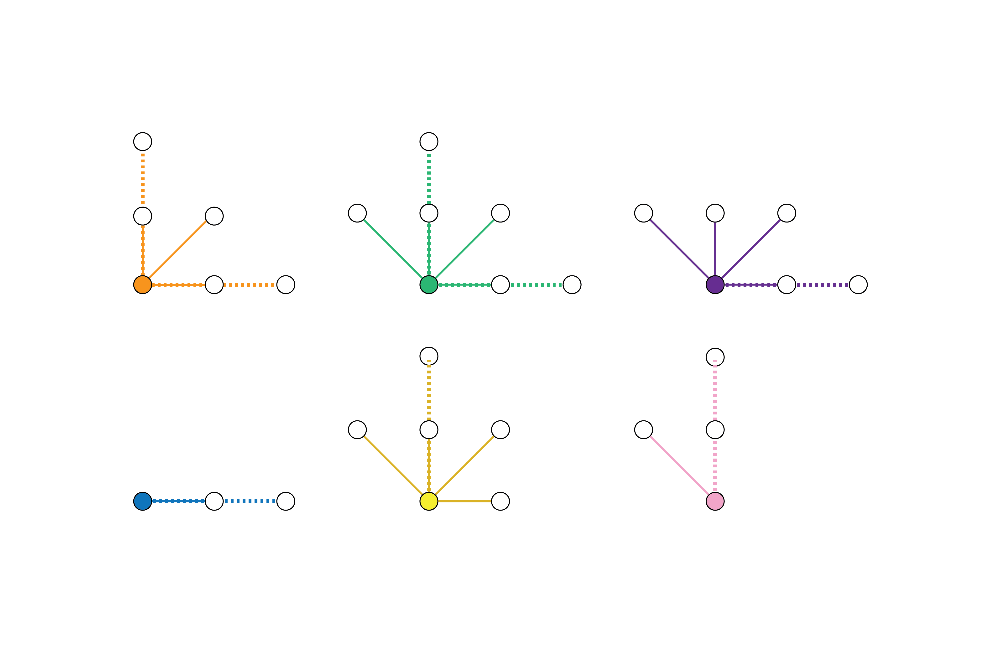
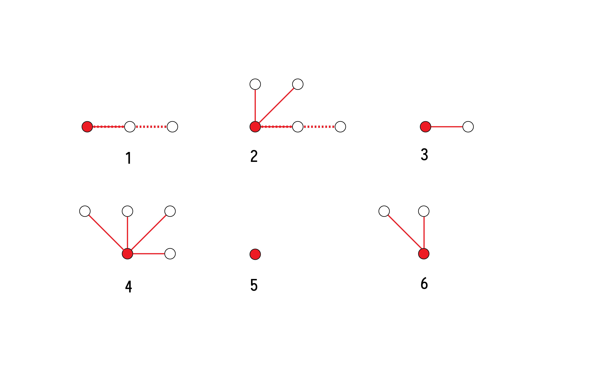
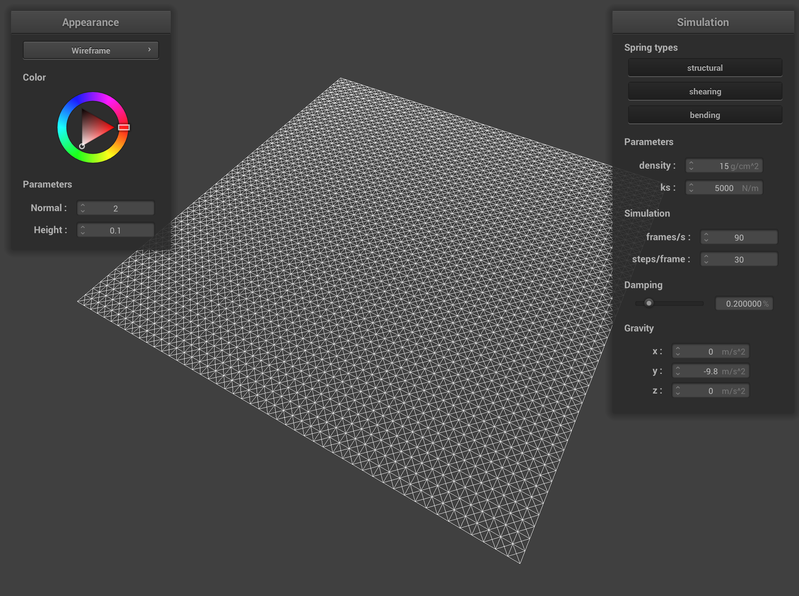
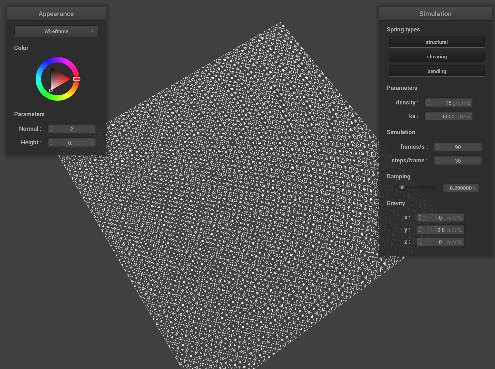
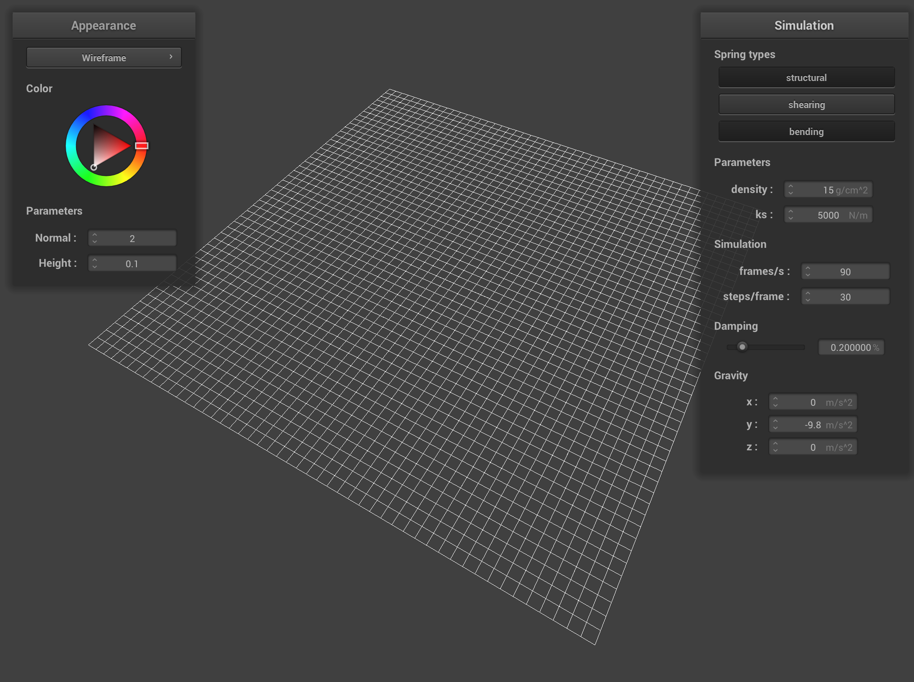
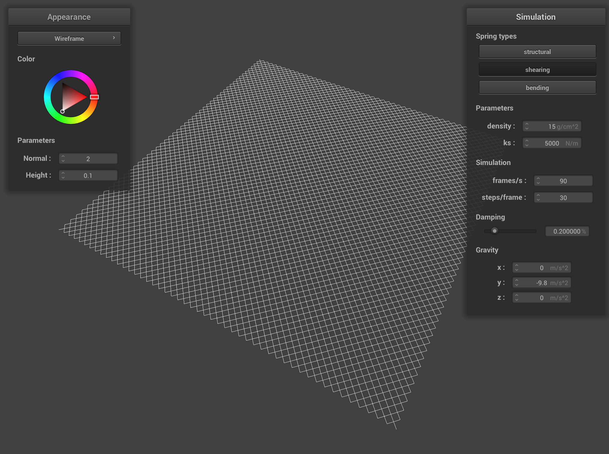

Implementing the Grid
To create the grid with the appropriate springs, we divided the grid of points into 6 sections, and 6 special points. Below is a color-coded diagram of our implementation:

Each of the colored sections scale in size with respect to the overall grid, and have predefined springs, as shown below. Additionally, there will always be 6 red points, shown above that have different springs from any of the predefined sections due to them being in the overlap of two of the colored groups. Their springs are also shown below.


Left: the springs associated with each of the colored groups. Right: the springs associated with each of the 6 edge cases.
Observe that these groups arise naturally from the spring dimensions. i.e. The first row cannot have any springs that go upwards, so neither the structural, bending, nor shearing springs that point upwards can be assigned to them, and similar constraints exist for the others. After assigning all of the springs, we have the below images of our implementation:


Above: two angles of `pinned2.json` generated by our initial code.
Additionally, below is the above cloth with just the structural and bending springs, as well as just the shearing springs:


Left: the cloth with only bending and structural springs. Right: the cloth with only shearing springs.